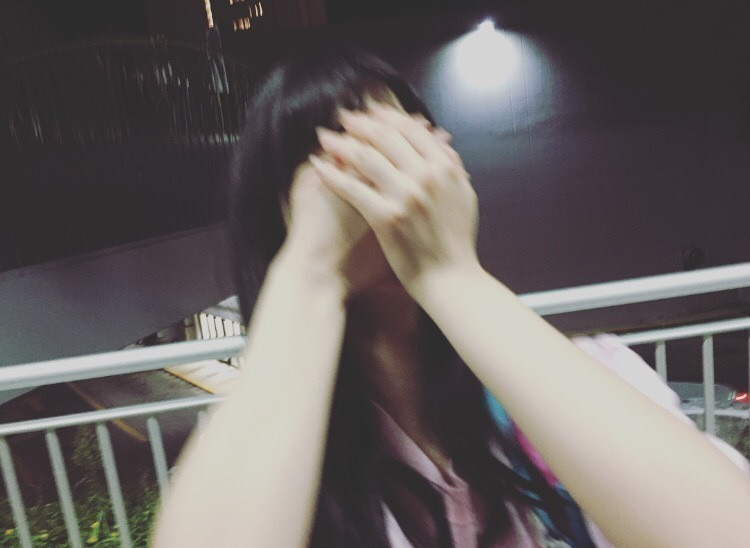
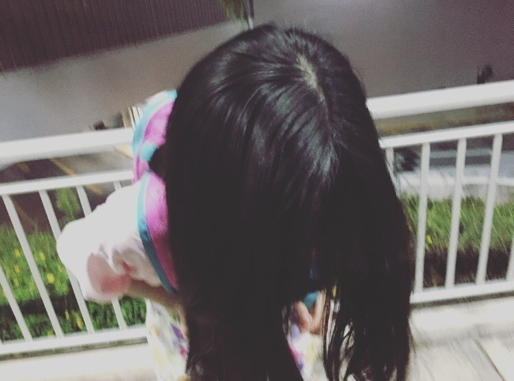

2016/0322Tueニンゲン
おはようございます
こんにちは
こんばんは
動きたい。

動きたいのに動けなくてもどかし過ぎて
ウォーってなってる
寺田蘭世です
────────
コメント返し○
○蘭世足大丈夫？たまにはゆっくりしてね！全力で応援するからね(๑>•̀๑)ﾃﾍﾍﾟﾛ
→ありがとう！
そうブログでは書いてないけど
実は、アンダーライブのラストスパートで捻挫しました
感動的なときに、、、
自分がうざ過ぎます
何人か気付いてコメン卜してくれた方いたので書きますが
ラストの
君の名のサビで合流したのですが
AメロもBメロも皆で歌いたかった、、、w(:_;)w
1分1秒が惜しいってすごく思った瞬間でありました
でもね、
アドレナリンって本当にあるんだなって実感しました。
東北ライブもあるので
しっかり治したいです
○らんぜ今晩は、捻挫したのかぁ、焦ってムリしても良い事無いよ。時には一休みも必要なのかな。テラダさんいつも全力疾走だからね(^_^)
→ごめんなさい
皆、本当にありがとうございます
w(:_;)w
○らりんの卒業かなしいよね、、
でもアイドルのオーディション受かった瞬間から卒業っていつかやってくるものだし蘭世もいつか卒業しちゃうと思うと悲しい、、
けど、それまでずっと応援してます！
がんばってね！
→コメントありがとうございます
始まりがあったら終わりもある
でも、始めなきゃ無だしね
だから、1日1日大切にしたいなって改めて思う。
○アンダーライブお疲れ様！
僕は遠征して、今帰りの新幹線の中だよ！
永島ロスやばくて、特に「僕がいる場所」が乃木坂の楽曲の中では一番好きだったんだけど、アンダラ行ったお陰で聴くと泣きそうになる(T_T)
最高のライブをありがとう！
アンダラはいつも期待以上のものを見せてくれるから本当に楽しい！
蘭世もパフォーマンス凄い良かった！
蘭世のダンス凄く好きだなって思って見てた！
→新幹線！！！
コメントありがとうございます
ホント乃木坂46にはたくさんいい曲があります
アンダーライブをやる度に
この楽曲も歌詞が深いなって思う楽曲沢山あります。
だからこそその素敵な歌詞を自分なりに解釈して
ダンスとかで表現するのはすごく楽しいです✨
アンダラはいつも期待以上
そう言ってもらえると嬉しいです
お越し頂き誠にありがとうございました
○本当に楽しいライブでした！ありがとうございました！！
→ありがとうございます✨
本当に嬉しい
こういう言葉を掛けてくれる方がいるから
次も頑張ろうって思えます
○お疲れ様です。
足の調子はどうですか？
遅くなってしまいましたが
「LARME」買ってきました！
これはおじさんが読むものではないですね
でも、
ファッション好きでブランドのコレクションとかよく見てるので、こういう女の子のファッション雑誌も読んでみるとなかなか興味深いですね。
最初パラパラとページめくってたら気づかなかったくらいいつもと雰囲気の違う蘭世でビックリ！
→コメントありがとうございます
LARMEわー
ありがとうございます
ありがとうございます
私も自分で本屋さんに行って買いました
父が私って気づかないで
白石さん出てるー
あ、飛鳥さんもいるねーって
読んでました
娘が出てるのに気づかなかったのかって、、、
言ったら
( ³ω³)ﾌｧｯ
え、これ( ³ω³)ﾌｧｯ
これ蘭世なの( ³ω³)ﾌｧｯ
ってなってました。笑
○頑張れよ寺田
→色々頑張る
ありがとうございます✨
○千秋楽でトロッコで永さんとチューしたって聞いたよ。
やっぱり「らりん、そこ代われ！！」
→そうなんです
千秋楽のラストスパートのロマンティックいか焼きでトロッコに乗れました
トロッコに乗りたいっていつかのブログに目標で書いてたからすごく嬉しかった
2階3階のお客さんを近くで確認できたのが嬉しかったし
私の推しタオルを持ってる方が昔より増えたことをまた実感出来ました
らりんさんにキスしてもらえた事と大好きーって言えたから満足✨
────────
コメントにも沢山捻挫への心配コメントありがとうございます
申し訳なさでいっぱいです
コレのせいで何件かお仕事に参加できなかったりする度
悔しい思いでいっぱいになります。
だからせめてもの思いで
ブログを書いています、、、|•_•`)
足冷やしながらブログのコメント読んでます
最後まで読んでくださり
ありがとうございました。

good night✨
2016-03-22
2016/03/22 21:54


コメント(441)
蘭世の生写真あてたよー！
応援してます！
捻挫大丈夫？
捻挫痛いよね～
癖にならないように気をつけてね！
蘭世ちゃん最近好きなアニメとかあるー？
握手がたのしみです！！
制服で行くんだけど、だめかな？
面白いブログありがとう笑
体調に気をつけて٩(๑•̀ω•́๑)و ｶﾞﾝﾊﾞｯﾃ！
足大丈夫⁈
自分も右手の小指を骨折して、野球できてない(~_~;)
お互い安静にしつつも、何かしら出来ることを頑張ろう！！
蘭世の勢いとまらんぜ！！！
じゃ*･゜ﾟ･*:.｡..｡.:*･'(*ﾟ▽ﾟ*)'･*:.｡. .｡.:*･゜ﾟ･*
大丈夫…じゃないか。お大事に！！
らりんの卒業コンサートのセトリの中で1番好きな曲はなんでしたかー？
アンダーライブお疲れ様
これからまた全国ツアーあるけど体調管理頑張ってね
蘭世が二階席きてくれたときすごい嬉しかったよー
捻挫大変だったね
無理しないでね
これからも蘭世の活躍きたいしてます
仕事できないのは辛いけど体大事にしてね
また元気にステージで歌い踊れるようになることを祈ってます
コメント返したまにやってくれるのいいね！
ハルジオンCD買ってやっと全部見終わったよ！
らんぜのPVひたすらリピートしてる（笑）
あつき
らりんちゃんが抜けてもこれからも頑張って！
応援してる！！！(^O^)／
あと蘭世がダンケシェーン踊ってるとき可愛すぎ、、、。笑
足大丈夫ですか？アイドルである以前に1人の人間で、身体は資本ですから、早く良くなることを祈ってます！
こんなときに聞くものでもないのかもしれないのですが、蘭世ちゃんは何かアイドル育成ゲームみたいな、音ゲーもやってたりするのですか？
ブログの更新ありがとうございます。毎回楽しみです（＾◇＾）
これからも応援してるので頑張って下さい。！
らりん卒業しちゃったね泣
ってことはもうすぐまいまいが卒業しちゃう
まいまいとの思い出が何かあったら教えてください！
蘭世の復活楽しみに待ってるよ！
らんぜの勢いとまらんぜ！！
誰も責めたりしないから( ´ ▽ ` )ﾉ
まあでも嫌なことあったら遠慮すんなよな
コメント返しだけのブログだけど、テラダらしさが出てる気がする(*´ω`*)
いつも応援してるね、だけのコメントになってるから、一言気持ち伝えるね
蘭世しゅき〜♡
なんか小っ恥ずかしいな...
はい、
ではこれからも
蘭世の勢い、止まらんぜで
はい、、、
捻挫はね〜捻挫グセついちゃうと大変だから気をつけなよ〜
ライブお疲れ様。
捻挫したの？
それで動きたいのに動けなくてウォーなわけね。理解した。
早く良くなってね。
ジッとしてれば治るさ。
どうしても動きたかったら、捻挫した足以外を動かせ！
まぁ、ゆっくり治していきましょい♪
サポーター安いの使うなよ^^;
LARMEのはまじでわからんぜだよ、、、
普段のメイクの方が1000倍いい！！
セナです。
蘭世の個人PV観たよ～～
ボーダーの世界感がよく伝わりました！
蘭世に質問します！
関東の握手会でもメイドのコスプレしますか？
蘭世のメイド姿見たいのでぜひお願いします
怪我をしたときは安静にして早く治すのが一番大事。
治してからまた頑張ればいい。って家のおばあちゃんが言ってました。無理はしないでくださいね。お大事に。
明日はいよいよ『ハルジオンが咲く頃』の発売日ですね！この日をずっと待っていました！買います！絶対に買います！早く蘭世ちゃんの個人PVフルで見たいなぁ〜。
この間、友達とボウリングとカラオケに行ってきました。とても楽しかったです！蘭世ちゃんとも行きたいなぁ〜。
早く治るといいね(~_~;)
名古屋のアンダラ、2日目の昼の公演見に行きました。
MCの時のすべらない話の時、蘭世が二回連続でサイコロの星の目を出すミラクルに驚きました笑。
無理せずゆっくり治してな！(^-^)
遠いけど6月4日の個握行くな(*^^*)
これからも頑張って！
足の捻挫は大丈夫ですか？
今は焦らずじっくり治してください。
永さんの卒業はとても悲しい反面、彼女が新しい世界へと進む素晴らしい出来事でもあると思います。
いつか蘭世にもこんな日が来ると思うと悲しくも嬉しい何とも言えない気持ちになります。
だからこそこれからも蘭世がアイドルをしている時間を貴重なものと思い応援していきたいと思います！
ってことで、蘭世！頑張れー！
寺田蘭世様
早く治して、新しいアンダーメンバーの力を永さんに見せよう。
それが一番永さんも喜んでくれる。
足は、大丈夫かな。しっかり治して次に向かって行こう。
泣くなよ。前の壁を少しずつ登ろう。
がんばれ、蘭世！
足痛めた中ブログ更新ありがとう♡
皆のコメント返し読んでると足の心配が増すのはもちろん、アンダーライブすごく良かったんだな…って伝わってきます( ˊᵕˋ )
羨ましい…
個人的に何回もいうけど足が大丈夫か心配なのはもちろん
トロッコに乗った時……っていうコメントでコメ返してたときにすごく反応して、嬉しさが半端なかった(´；ω；｀)
蘭世が少し前のブログで
トロッコに乗れるようになりたい
と言っていたのをみていて
今すごくそれが叶った気がして嬉しいです。
蘭世の勢い止まらんぜ！！って感じで
今は蘭世自身が勢いを作ってる感じで本当にすごいなと思いました。
あと、今日握手券が届いて初めての握手券でめっちゃ沸いてます(どうでもいい)
そして連日ブログ更新してくれてることもすごく嬉しかったりします|´-`)ﾁﾗｯ
蘭世のブログ本当に楽しみなので…
今は足を治すことに専念して
無理せず頑張ってね！！
コメ返お疲れ様( ..)"
蘭世大好き(*´˘`*)♡
らん✩
コメントする